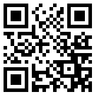

Jsme nezisková organizace, která si klade za cíl umožnit nevyléčitelně nemocnému, imobilnímu pacientovi paliativní péče vyrazit na výlet do přírody, na kulturní památku, sportovní akci, koncert oblíbeného hudebníka či divadelní představení. Navštívit rodinu, oblíbené místo nebo kolegy v práci. Ještě jednou cítit vůni lesa, vidět západ Slunce, naposledy na sebe nechat padat kapky letního deště či sněhové vločky. TODO
Inspirovali jsme se u nizozemské Stichting Ambulance Wens, která byla založena již v roce 2007 panem Keesem Veldboerem starším, tatínkem současného ředitele nadace. Jeho myšlenka se rozšířila do celého světa a v roce 2022 dorazila i k nám, do České republiky, a to pod názvem Sanitka Přání.
Díky zkušenostem z české "sanitky" a stáže v Nizozemsku vznikla na počátku roku 2023 organizace Naděje na kolech, z.ú. .
Realizace přání probíhá pomocí speciálně vyvinutého vozidla, vybaveného mimo jiného i vzduchovým podvozkem pro co největší pohodlí během cesty, elektrickým lehátkem, tlumeným osvětlením a ozvučení interiéru, plně prosklenou zadní částí pro snadný výhled a mnoho dalšího. Ve vozidle je k dispozici základní občerstvení.
TODO
Dáváme naději, že se ještě jednou podaří navštívit vysněné místo či událost, a to každému klientovi pouze jednou. Služba je poskytována bezplatně, pro klienta a jednu osobu doprovodu, včetně případného vstupného a podobných poplatků. Klienta může doprovázet více osob, ale pouze ve vlastní režii. Klient musí absolvovat cestu výhradně na lůžku. TODO
Níže naleznete odkaz na formulář, po jehož vyplnění vás budeme kontaktovat a domluvíme detaily přání. TODO - If you have a wish for a patient, please complete the intake form.
Podpořit nás můžete buď finančně, a to příspěvkem na transparentní účet 2402567703/2010 vedený u Fio banka a.s., nebo jako dobrovolník. Pro více informací nás kontaktujte. If you would like to support the project by any amount you can by transfer it to the transparent account 2402567703/2010 (bank Fio banka a.s.) or join us as volunteer.

Potvrzení o poskytnutí daru nejsou vystavována automaticky. Pro vystavení potvrzení či smlouvy nás kontaktujte na e-mailu nadejenakolech@gmail.com TODO